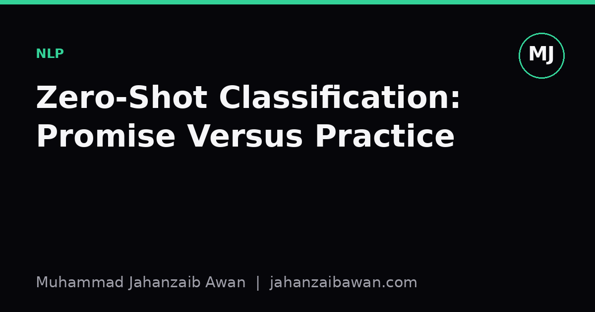

Zero-Shot Classification: Promise Versus Practice
Zero-shot models let you label text without task-specific training data, but the convenience hides real evaluation traps that a leakage-aware, sceptical reader should know about.

Why zero-shot feels like magic
The pitch is seductive: hand a model a piece of text, give it a list of candidate labels it has never seen during training, and it returns a sensible ranking. No labelled training set, no fine-tuning run, no annotation budget. For anyone who has spent weeks collecting and cleaning labels for a supervised classifier, this looks like a shortcut worth taking seriously.
Most practical zero-shot text classification today relies on natural language inference, or NLI. A model trained to judge whether one sentence entails, contradicts, or is neutral towards another is repurposed: your input text becomes the premise, and each candidate label is wrapped into a hypothesis such as 'this example is about sport'. The label whose hypothesis the model considers most entailed wins. It is a clever reuse of an unrelated training objective, and it works far better than it has any right to.
I want to be precise about what this promises, because the framing matters. It promises that you can classify into an arbitrary, open set of categories at inference time without retraining. It does not promise that the resulting accuracy will match a supervised model trained on even a modest labelled set for your specific task. Those are two very different claims, and blog posts and demo notebooks often blur them.
A worked example of where it wobbles
Suppose you want to route customer support tickets into three categories: billing, technical fault, and account access. You feed a zero-shot NLI pipeline the ticket text and the three label names. On a quick eyeball test of twenty tickets, it gets sixteen right, which feels like eighty percent and seems usable.
Now look closer. Of the four errors, three involve tickets that mention both a password reset and a charge dispute in the same message, and the model consistently picks 'account access' because the word 'login' appears near the start of the ticket, even though the customer's actual complaint is a duplicate charge. This is not a subtle edge case; it is the single most common real ticket type in many support queues. The model is not reasoning about intent, it is pattern-matching surface lexical overlap between the ticket and the label's hypothesis wording.
Here is the part that should worry you more: if you rename the label from 'account access' to 'login or password issue', accuracy on that same twenty-ticket sample jumps to eighteen out of twenty. Nothing about the underlying task changed. The label string did. This means the number you report, eighty percent or ninety percent, is partly a property of how cleverly you phrased your categories, not a stable property of the model's understanding. Any accuracy figure you quote for a zero-shot system without also reporting the exact label strings used is close to meaningless for comparison purposes.
This sensitivity compounds when labels are ambiguous or overlapping, which real-world taxonomies almost always are. A ticket about a fraudulent charge could reasonably sit under billing or under account access depending on how your business defines the categories, and the model has no access to your internal definitions unless you encode them into the hypothesis template.
The evaluation trap: it looks tested but often isn't
Here is where my instinct as someone who cares about leakage-aware evaluation kicks in. Many zero-shot benchmarks report strong numbers on datasets whose label names and topic distributions bear a family resemblance to text the underlying model saw during pretraining or during its NLI fine-tuning. A model fine-tuned on a large NLI corpus scraped broadly from the web has, in some diffuse sense, already encountered sentences resembling 'this document discusses finance' or 'this review expresses negative sentiment', because those are exactly the kinds of paired statements that appear in web text and in NLI training pairs.
That is not the same as classic train-test leakage where identical examples appear in both splits, but it produces a similar inflation effect: the model performs well on tasks whose label semantics are common and well-represented in general text, and performs noticeably worse on tasks with specialised, jargon-heavy, or internally-defined categories, which is precisely the situation most businesses actually have. A benchmark built from news topic labels like 'sport', 'politics', and 'technology' will make zero-shot classification look excellent. A benchmark built from a company's internal ticket taxonomy with labels like 'tier 2 escalation' will not.
The honest response to this is not to abandon zero-shot classification, but to test it the way you would test any classifier: build a held-out labelled sample from your actual data, evaluate against it before deployment, and try several phrasings of your labels to check for the kind of sensitivity described above. If accuracy swings by ten or fifteen points depending on label wording, that variance is information; it tells you the model has not learned a stable decision boundary for your task, only a fuzzy semantic association that you can nudge around.
Where zero-shot genuinely earns its keep
None of this means zero-shot classification is a trick. It is a legitimate and often excellent tool for triage, for exploratory labelling before you commit to a taxonomy, and for cold-start situations where you have no labelled data at all and need something better than keyword matching by next week. It is also a reasonable way to bootstrap a weak-labelling pipeline: use zero-shot predictions as noisy initial labels, have humans review a sample, and use that reviewed sample to train a proper supervised model once you understand your actual label distribution.
The practical takeaway is simple: treat zero-shot accuracy claims, including any number I might casually quote, as conditional on the exact labels and prompts used, and always validate on a small held-out sample from your own domain before trusting it in production. Zero-shot buys you a starting point, not a finished classifier.